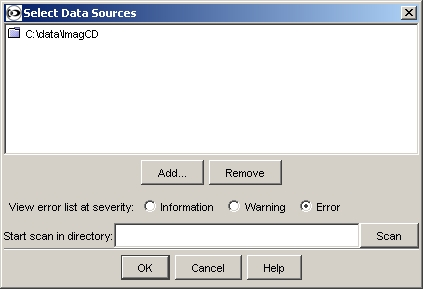

The top part of the window shows the list of databases that the software is using (see the databases page for a description of a database).
To add a new database to the list of data sources click 'Add'. The directory selector is displayed. Select a directory that contains INTERMAGNET archive year directories (for example the root directory of an INTERMAGNET CD-ROM or DVD, or a directory on a hard disk that you have copied the contents of a CD-ROM or DVD to).
To remove a data source from the list, highlight the item you want to remove and press the 'Remove' button.
When a database is added to the list of data sources the program may find problems during its search through the files in the database. The 'View error list at severity' set of radio buttons allows you to choose how much information the program displays about the problems tat it found.
As well as manually adding databases to the list you can tell the program to search for them. You do this using the 'Scan' button. Before pressing 'Scan' you can enter a start point for the scan in the text box - you can enter the name of any directory on your computer. If you leave the text box blank then the program will search all the disk space on your computer (including any network drives) - this can take a very long time.
The data sources that you have selected are stored when you exit from the
program and automatically re-loaded the next time you start the program.
Reloading Data
If a database changes (because, for example, you are working on the files in the
database), you must tell the program to reload the data. If you do not do this,
the program will have an out-of-date list of the database. To reload the data in
all databases use the 'Reload Data' item from the 'Database Menu' (or right
click on the first item in the Explorer window).
Quick links:
Contents
Index